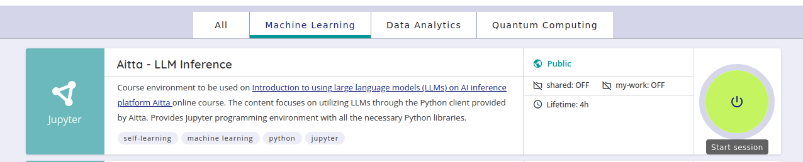
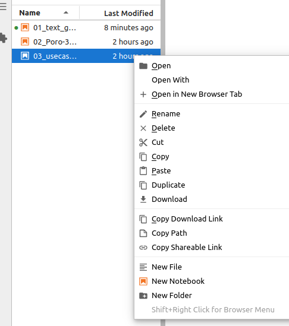

3. Aitta AI inference platform#
Aitta is an AI inference platform with a model catalog designed for research and development purposes. Aitta offers you an easy way to utilize powerful LLMs and other AI models through Python API client.
Aitta is easy to use: it has a Web UI (user interface) and a simple OpenAI compatible REST API. To be able to use this API, you need to log in to Aitta’s webpage. Then you are able to create API keys that enable you to access the models.
While its development is ongoing and uploading custom models is not available, Aitta already provides models for you to explore through the web UI and API endpoints using Python libraries aitta-client and openai. In the near future it will also be possible to create embeddings (numerical representations of real-world objects) of the data using Aitta.
Understanding Aitta API and Python Client#
Aitta makes models and inference tasks available via a REST API, so you can directly communicate with it via HTTP if you want. However, you don’t need to know how to use REST APIs or understand all the HTTP methods involved. With just a few lines of code, you can utilize the Python client created by the Aitta developers.
Aitta makes models and inference tasks available via a REST API, allowing direct communication via HTTP. You can access the AITTA API reference documentation to explore details about endpoints, parameters, and responses.
API-term definitions:
API (Application Programming Interface): An API allows one program to request services or data from another program, without needing to understand its internal workings.
REST (Representational State Transfer) API: A REST API is a type of API that allows different applications to communicate with each other over HTTP requests in a simple, scalable, and stateless manner.
API Endpoint: Specific URL within an API to access or store specific resources or issue a particular command to the system.
API client: A program or tool used to communicate with APIs.
However, you don’t need to be familiar with REST APIs or HTTP methods. Instead, you can use the Python client developed by the Aitta team to interact with the API in just a few lines of code.
Resource management#
Aitta allocates resources on demand from the European top supercomputer instead of wasting money and energy by reserving heavy static servers, which are possibly idling most of the time, for running the models. At the moment, supercomputer resources are allocated automatically and freed after a certain period if time.
Since Aitta is still in development phase, it doesn’t consume users’ billing units. When the service is officially launched, this will change.
Using chat-based LLMs with Aitta API#
Using the model through the API with the Python client is straightforward and user-friendly, requiring only a few lines of code to get started.
First, we are going to obtain an API key and configure the Aitta client with it, load the model and set up the OpenAI client for compatibility. Once these steps are completed, you can perform chat completions - send prompts and receive responses.
In the upcoming exercises, we will go through step by step the process of using the Python client to integrate and work with LLMs via the Aitta API, helping you become comfortable with the workflow.
The diagram below illustrates the process of making an API call for chat completions for the first time:

Generating the first response might take some time. Starting a new worker in the LUMI Supercomputer takes some time.
Aitta as one of the MLOps tools#
Aitta is here to complement provided MLOps (Machine Learning Operations) tools. One of the existing MLOps tools is MLFlow; you can check this tutorial for using MLFlow in CSC’s supercomputers.
Exercise time!#
Coding exercises are available through CSC’s Noppe service for interactive web based applications (CSC Docs). An application for this course is set under Machine Learning workspace. Basic knowledge of Python programming and Jupyter notebooks is required for the exercises. For more information on using Jupyter Notebooks, visit Jupyter Documentation. The accepted authentication methods to access Noppe are CSC account, Haka, Virtu, or MOOC.fi credits.
Find the application Aitta - LLM Inference for this course and start a session.

Activated Noppe instance is valid for 4 hours!
Exercise 1: Log into Aitta website#
First you are going to log into Aitta website and follow instructions:
Log into Aitta website https://staging-aitta.2.rahtiapp.fi/public
Which models can you find? Can you input some text in the Web UI after choosing a model to use?
Do you find the place for API key generation?
Take a look around, can you find documentation for Aitta Client usage?
Exercise 2: Chat completions with LumiOpen/Poro-34B-chat model#
Try to use Poro chat model 02_Poro-70B-instruct-completions.ipynb
Refine parameters that affect the output
Exercise 3: Tokenize text using LumiOpen/Llama-Poro-2-70B-base model’s tokenizer#
See how text is tokenized using LumiOpen/Llama-Poro-2-70B-base model’s tokenizer in the 03_poro-tokenizer.ipynb
NOTE!
Your work is not saved in Noppe. You should download preferred files if you want to retain your work after Noppe instance times out.
You can download a single file by going to the File-menu or by right-clicking the file and selecting Download from the dropdown menu.

Be careful not to share your API Key anywhere.
Next steps#
Now we have covered first steps of using API for generating text with LLMs. You can move on to next section, Usecases of LLMs.